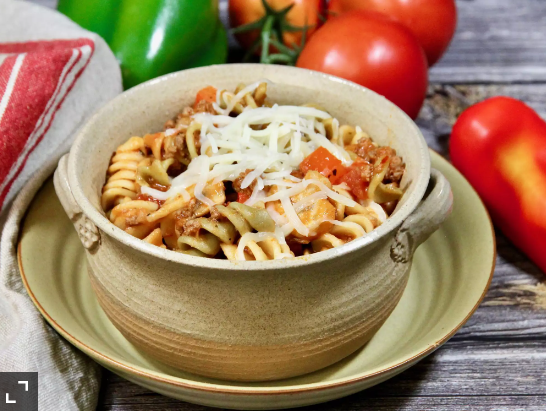

One-Pot Saucy Pasta

Description
No need to boil the noodles separately for this one-pot saucy pasta dish with ground beef, mushrooms, and red bell peppers.
Ingredients
- 1 pound extra-lean ground beef
- 1 medium onion, chopped
- 3 ½ cups water
- 3 cups dried rotini pasta
- 1 (26 ounce) jar spaghetti sauce
- 1 cup chopped red bell peppers
- 1 cup sliced mushrooms
- 1 cup shredded mozzarella cheese
- salt and freshly ground black pepper to taste
Directions
- Heat a large skillet over medium-high heat. Cook and stir beef and onion in the hot skillet until browned and crumbly, 5 to 7 minutes. Drain and discard grease.
- Add water, pasta, and spaghetti sauce to the skillet and bring to a boil, about 5 minutes. Cover and reduce heat to low. Simmer, stirring occasionally, for 15 minutes.
- Add bell peppers and mushrooms to the skillet and cook for 5 minutes.
- Sprinkle with mozzarella cheese, season with salt and pepper, and serve.
Nutrition Facts
Per Serving: 504 calories; protein 27.2g; carbohydrates 52.2g; fat 19.9g; cholesterol 66.7mg; sodium 673mg.